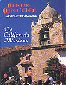
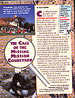
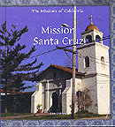

|
|
Have you ever wanted to do archaeology but didn’t know where to start? Are you an archaeology student who desires an authentic hands-on lab and field learning experience before you graduate? Or, do you have a desire to experience and discover California history for yourself? If your answer is yes to any of these questions, then the CSU Monterey Bay summer field program in archaeology is for you! Summer Field Program in Archaeology: SBSM250s/350s, July 3rd to July 28th, 2000. Summer 2000: Old Mission San Juan Bautista, California. CSU Monterey Bay DLEE Registration Form, 100 Campus Center, Seaside, CA 93955-8001; Fax: 831-582-3741; E-mail: dlee.monterey.edu; online registration forms at: http://dlee.monterey.edu. See announcement for further details! |
| Dr. Ruben Mendoza was recently appointed to the Board of Directors of the California Missions Foundation, San Francisco. Dr. Mendoza will serve as a member of the Foundation's Grants Review Committee. Steve Hearst is the Chairman of the Board, and recently hosted the Foundation's Board to two meetings at the Hearst Ranch. At the most recent Board meeting, the Foundation approved the contribution of $100,000 for art restoration and historic preservation projects in eleven of the 21 California missions. One of the primary beneficiaries of this round of grants was Mission Dolores in San Francisco. Recent media coverage of the destructive beetle invasion that has compromised the woodwork and santos of the main altar made this a priority with the Foundations Board of Directors (see San Francisco Chronicle article of Thursday, May 18, 2000). Check www.missionsofcalifornia.org for the makings of the new web site. If you or your organization would like to contribute to this important cause, contact: President Richard Ameil, The Hearst Building, 5 Third Street, Suite 528, San Francisco, California 94103-3216, or call Toll Free 877-632-3623; Telephone: 415-764-1600; Fax: 415-764-1616. |
 |
On December 3rd of 1999, the Museum Education Project and the students of Professor Mendoza's SBSA 224s/324s course sponsored an Open House for the students of Crumpton Elementary in Marina, and those of San Juan Elementary in San Juan Bautista. The morning was spent providing tours and hands-on artifact study for the students of Crumpton Elementary. That afternoon, several teachers, students, and community volunteers from San Juan Elementary worked with us to coordinate a successful hands-on archaeology field experience for the students of that school. See the Open House section of this site for a slide show of the days events. |
| "California Chronicles," published by Cobblestone Publishing Company of New Hampshire, recently featured an article on the subject of "The Case of the Missing Mission Courtyard" (September, 1999). The article, written by Emily Abbink of UCSC in collaboration with Professor Mendoza, provides an overview of the ongoing four-year effort by the Institute of Archaeology to recover the missing mission courtyard of Old Mission San Juan Bautista. In addition to the overview of the excavations led by Professor Ruben Mendoza, the article includes a basic version of the mapping of the buried structures of Old Mission San Juan Bautista created by Professor Mendoza and his team. Also included is a brief overview of earlier efforts to preserve Mission Santa Cruz. |  |

|
 |
 | Rosen Publishing of New York has just published a series of children's books on the subject of the early California missions (publication date, 2000). Professor Ruben Mendoza served as an Editorial Consultant for the publication of three of the twenty-one volumes. He served as editor to the volumes titled "Mission San Carlos Borromeo del Rio Carmelo," "Mission San Juan Bautista," and "Mission Santa Cruz." The "Mission San Juan Bautista" volume includes a brief overview of the work of archaeologist Glenn Farris. In 1990, Glenn Farris excavated the so-called Neophyte Housing Area of the San Juan Bautista State Historic Park. |
|
Dr. Ruben Mendoza and the students of the ASTV were recently featured in a grade school science text titled Science 2000 (publication date, 2000). The text, which is intended for use by 3rd through 5th grade students includes a chapter on what it is that archaeologists do for a living. Photographs by Professor Mendoza that accompany the text depict the excavations at Old Mission San Juan Bautista. The chapter on archaeology includes an extended picture glossary of terms related to archaeology. |
|
The students of SBSC 367sl (Applied Field Methods in Historical Archaeology)recently completed the creation of a coloring book for Old Mission San Juan Bautista. The coloring book, with an initial print run of 200, proved itself a real success at the recent Museum Education Project Open House held on May 8, 1999. Arrangements have been made with the California Department of Corrections (Soledad facility) to have 3,000 copies printed for distribution at upcoming events. The coloring book details the history and culture of the Old Mission from the perspective of a Native American (Mutsune) child. As of September, 1999, the coloring book was being printed (complete with a color-print cover), and is scheduled for release in October, 1999. Return to this site for future reports on how you can obtain the coloring book. You may also write to Old Mission San Juan Bautista, 2nd & Mariposa Streets, PO Box 400, San Juan Bautista, California 95045. |
|
In the gray menu bar at the top margin of this Web page you will notice a link to “Artifacts.” In order to see a sample of the artifacts recovered from the excavations at Old Mission San Juan Bautista, you need only click on the “Artifacts” button and enter the “Sample” database. Professor Mendoza’s students will be provided password-protected access to the database for the purpose of class study and capstone research. This database is the result of much work and planning by the crews of the Alta California Mission Research Project. A recent grant of $5,000 from the CSU Research Awards Competition made to Professor Mendoza will allow for the completion of the data entry portion of this project. Justin Evans, CSUMB archaeology/multimedia graduate student and SBSC student technician, helped launch the project effort with the posting and redesign of an artifact database developed by Professor Mendoza. Please feel free to revisit this page for additional updates and instructional modules that will make use of the database materials and images hosted on the Institute’s server. |